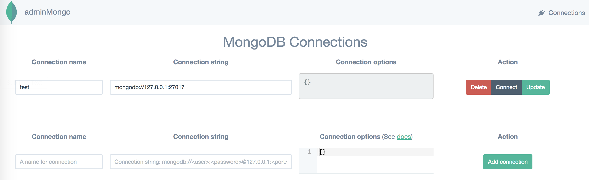
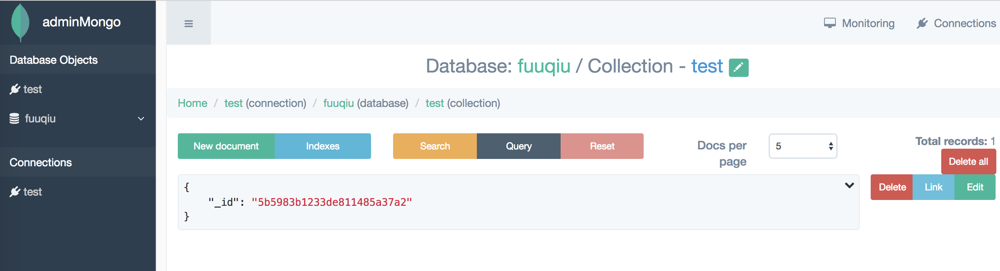

AdminMongo可视化管理工具
github地址：https://github.com/mrvautin/adminMongo
安装方法：
1、把git仓库克隆到本地
git clone https://github.com/mrvautin/adminMongo
2、进入仓库
cd adminMongo
3、安装
npm install
4、启动
npm start
5、访问地址 http://127.0.0.1:1234
进来之后只需填写数据库名称Connection name，和本地ip地址 mongodb://127.0.0.1:27017 即可，点击connect进入即可

进入后台效果图
